Dans cette vidéo, je vous révèle les quatre dernières stratégies avancées qu'utilisent les meilleurs traders de Polymarket. Des stratégies tellement de niche que la plupart des traders ignorent même l'existence. Nous avons déjà couvert les 10 premières dans les parties 1 et 2, mais ces quatre dernières sont d'un autre niveau. Ce sont le genre de stratégies qui séparent les traders d'élite du reste. Maîtrisez-en ne serait-ce qu'une ou deux et vous aurez un avantage que la plupart des traders de Polymarket ne verront jamais. Restez avec moi alors que je décortique chaque stratégie avec des exemples et vous montre comment elles peuvent être appliquées sur Polymarket. Commençons. Et d'ailleurs, si vous
Interface & Outils : Polymarket (site web de prédiction et de paris)
Contenu textuel & Code : Question de marché "Will OpenAI launch a consumer hardware product by...?", options de prix en pourcentage (3% pour Mars 2026, 34% pour Décembre 2026), panneau d'achat/vente avec boutons 'Buy Yes' et 'Buy No', volume total des transactions ($164,251 Vol.), et module de passage d'ordres à droite.
Action / Démonstration : Navigation et présentation d'un marché spécifique sur la plateforme Polymarket pour illustrer les stratégies de trading de niche.
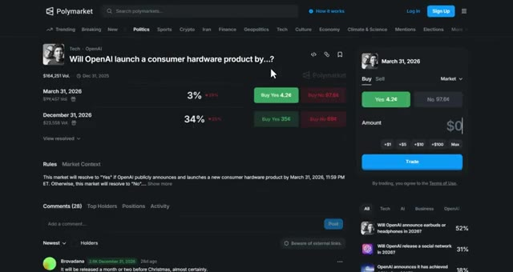
🔍 Agrandirgénérant un volume important sur Polymarket, vous pouvez débloquer des primes massives, jusqu’à 1 000 dollars après avoir généré seulement 1 million de dollars de chiffre d’affaires. C’est en plus du bonus de parrainage de 10 dollars lorsque votre filleul effectue son premier dépôt. Le lien est en bas. Très bien, passons directement à la stratégie numéro une. Celle-ci s'appelle l'actualisation du taux sans risque. Certains des marchés Polymarket les plus étranges, comme est-ce que les États-Unis confirmeront que les extraterrestres existent avant 2027 ? Ou est-ce que Jésus reviendra d'ici 2027 ? se négocient toujours autour de 4 % sur le oui. Non pas que quiconque pense que cela va réellement se produire, mais parce que la longue durée
Interface & Outils : Polymarket (site web de prédiction)
Contenu textuel & Code : Marchés de prédiction avec volumes de transactions (ex: 7M Vol., 2M Vol., 1M Vol., 19M Vol., 24M Vol.) et probabilités en pourcentage pour des événements politiques et géopolitiques.
Action / Démonstration : Navigation et affichage des différents marchés de paris et de prédiction disponibles sur la plateforme.
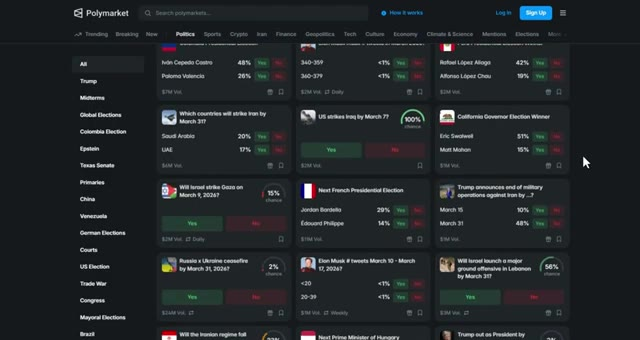
🔍 AgrandirLes marchés comportent une distorsion de la valeur temporelle inhérente. Cela s'appelle la théorie de la valeur temporelle de l'argent. Voici comment cela fonctionne. Le capital du camp du oui se retrouve bloqué pendant des années. Finalement, certains détenteurs ont besoin de liquidités, vendent prématurément et créent des pics de courte durée où le prix du oui est artificiellement élevé. Vous utilisez le marché du oui, qui se négocie autour de 18 cents, comme un taux sans risque pour des paris binaires à long terme. Voici la stratégie.
Interface & Outils : Site web Polymarket (plateforme de marchés de prédiction)
Contenu textuel & Code : Question de prédiction affichée ("Will Jesus Christ return before 2027?"), probabilité actuelle à 4%, graphique d'évolution historique des prix et panneau d'achat/vente avec les parts "Yes" (3,9¢) et "No" (96,2¢).
Action / Démonstration : Présentation visuelle d'un marché de prédiction à long terme pour illustrer la valeur temporelle de l'argent et le blocage du capital.
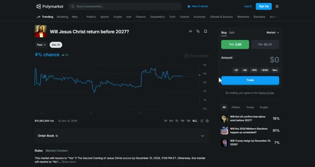
🔍 AgrandirSi un autre événement pluriannuel, comme est-ce que Taïwan sera envahi d'ici 2026, s'échange à 10,3 % de oui, vous le décotez d'environ 4 % par rapport au taux de référence. La vraie probabilité est plus proche de 6 %, et non de 10 %. Vous placez donc des ordres limités échelonnés pour acheter du non, à peu près 4 % en dessous du prix indiqué.
Interface & Outils : Interface web de Polymarket (marché de prédiction décentralisé).
Contenu textuel & Code : Question du marché : "Will China invade Taiwan by end of 2026?", prix du "Oui" à 10,3 ¢, prix du "Non" à 89,8 ¢, graphique historique de probabilité, volume total de 10 571 073 $, et panneau de passage d'ordres à droite.
Action / Démonstration : Consultation du graphique historique et des prix d'achat/vente pour placer des ordres sur le marché "No".
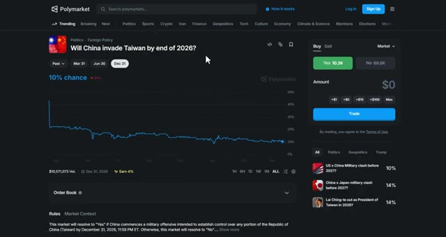
🔍 AgrandirVous attendez des pics stimulés par la liquidité et vous saisissez l'avantage lorsque le marché rebondit. Vous ne faites pas de trading sur la géopolitique. Vous faites du trading sur les mathématiques des capitaux bloqués et de la valeur temporelle mal évaluée. Laissez-moi vous montrer un exemple. Il y a un marché qui nous pose la question : est-ce qu'OpenAI annoncera avoir atteint l'AGI avant 2027 ? Oui, il s'échange à 0,18 dollar.
Interface & Outils : Plateforme de prédiction Polymarket (site web).
Contenu textuel & Code : Graphique de probabilité montrant une estimation actuelle à environ 10,3 % pour le "Oui" et 89,8 % pour le "Non", avec un volume total de transactions de 10 571 073 $.
Action / Démonstration : Visualisation du marché pour illustrer la valeur temporelle et les capitaux bloqués sur un pari géopolitique.
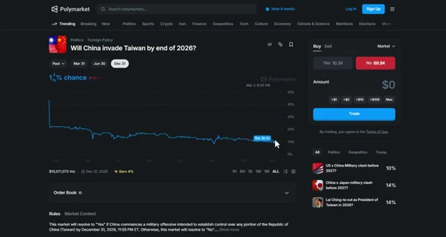
🔍 AgrandirMais si vous soustrayez le taux sans risque de 4 %, la probabilité réelle est plus proche de 14 %. Vous achetez « non » à 0,83 $ et vous attendez que le marché réajuste ses prix ou se résolve. C'est de l'arbitrage pur sur la valeur temps. La plupart des traders ne savent même pas que cela existe. La deuxième stratégie repose entièrement sur la reconnaissance de schémas de fausses nouvelles.
Interface & Outils : Site web de Polymarket (marché de prédiction décentralisé)
Contenu textuel & Code : Question du marché « OpenAI announces it has achieved AGI before 2027? », probabilité actuelle affichée à 15% (puis 17%), boutons d'achat « Yes 18¢ » et « No 83¢ », volume de transactions de 28 660 $, et graphique historique des cours.
Action / Démonstration : Visualisation du marché de prédiction et illustration des prix des parts « Yes » et « No » correspondant aux probabilités évoquées dans l'audio.
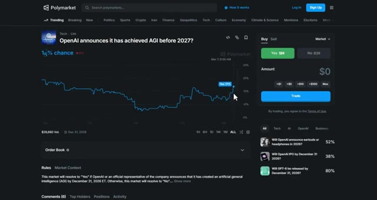
🔍 AgrandirFaux dossiers de campagne, faux captures d'écran, faux scandales. Les investisseurs particuliers y tombent dedans instantanément. Les professionnels, non. Voici comment cela fonctionne. Vous construisez une base de données mentale des canulars passés. Lorsqu'un nouveau sort, vous vérifiez le modèle. S'il correspond à de précédents faux et provient d'un compte suspect, vous contre-investissez sur le pic. Vous profitez des gens qui ne vérifient rien ou croient tout ce qu'ils voient sur les réseaux sociaux. Voici la stratégie. Lorsqu'un marché s'envole sur une nouvelle de dernière minute, vérifiez immédiatement la source. Provient-il d'un compte vérifié ? Provient-il d'un média crédible ? Ou s'agit-il d'un compte Twitter aléatoire ?
Interface & Outils : Polymarket (plateforme de marchés de prédiction)
Contenu textuel & Code : Graphique de probabilité de marché (« % chance »), prix d'achat « Yes » (12¢) et « No » (92¢), carnet d'ordres et liste d'autres marchés de prédiction associés.
Action / Démonstration : Analyse d'un marché de prédiction lié à Tesla et Elon Musk sur Polymarket.
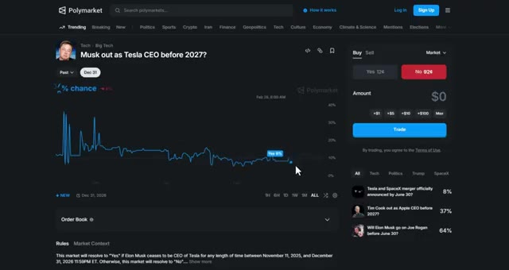
🔍 Agrandiravec moins de 500 abonnés. Si c'est le second cas, vous achetez le côté opposé et vous attendez que la vérité éclate. Laissez-moi vous donner un exemple. Il y a un marché qui demande : est-ce qu'Elon Musk quittera son poste de PDG de Tesla avant 2027 ? Soudain, le "oui" monte en flèche, passant de 12 centimes à 37 centimes parce que quelqu'un a publié une fausse capture d'écran d'un communiqué de presse de Tesla affirmant qu'Elon démissionne. Mais si vous vérifiez la source, c'est un compte Twitter aléatoire sans vérification, aucun média crédible n'a repris l'information, et les canaux officiels de Tesla restent silencieux. Vous achetez le "non" à 37 centimes et vous attendez que la fausse nouvelle soit démentie. En l'espace de quelques heures,
Interface & Outils : Polymarket, réseau social X (Twitter)
Contenu textuel & Code : Graphique de probabilités de marché, prix d'achat "Yes" (12¢) et "No" (92¢), publications et actualités sur Elon Musk et Tesla.
Action / Démonstration : Navigation et présentation d'un marché prédictif Polymarket illustrant l'analyse du sentiment et des réactions face à une rumeur médiatique.
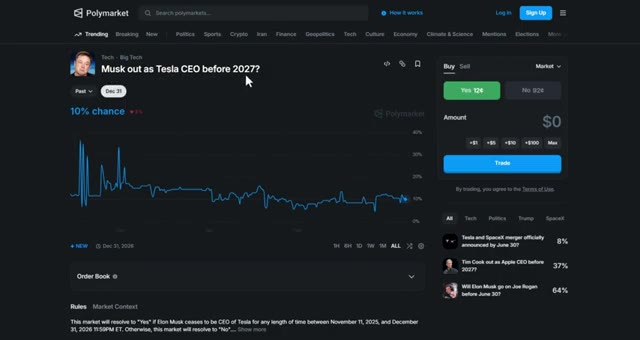
🔍 Agrandirle marché corrige à nouveau à 12 cents, et vous avez réalisé un bénéfice de 25 cents par action. Cela fonctionne parce que les investisseurs particuliers réagissent d'abord et vérifient ensuite. Vous faites le contraire. Vérifiez d'abord, puis tradez. Établissez une liste de contrôle mentale. La source est-elle crédible ? A-t-elle été confirmée par plusieurs médias ? Cela a-t-il un sens logique ? Si la réponse est non, pariez contre la hausse. La troisième stratégie s'appelle la rotation du personnage principal. La politique n'est pas rationnelle, c'est du narratif. L'attention change du jour au lendemain. Le favori d'aujourd'hui devient le mème de demain. Vous anticipez le changement d'ambiance avant la foule. Voici le
Interface & Outils : Polymarket et plateforme X (Twitter)
Contenu textuel & Code : Cartes de prédiction Polymarket affichant des pourcentages de probabilité et des volumes de transaction sur divers événements politiques et géopolitiques.
Action / Démonstration : Navigation et consultation des marchés de prédiction pour vérifier les informations avant d'exécuter des trades.
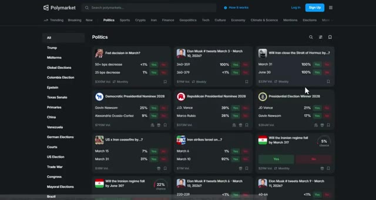
🔍 Agrandirstratégie. Identifiez le candidat ou la personnalité surmédiatisée. Trouvez le prochain gagnant potentiel de l'attention. Achetez-les tôt à 10 ou 20 cents. Vendez-les lorsque l'ambiance change et qu'ils deviennent le personnage principal. Vous négociez des cycles d'attention, pas une politique. Laissez-moi vous montrer comment cela fonctionne. Au début de 2024, il y a un marché qui demande, qui sera le colistier républicain ?
Interface & Outils : Polymarket (plateforme de marchés prédictifs)
Contenu textuel & Code : Liste des candidats (Tom Begich à 25 %, Bernadette Wilson à 32 %, Nancy Dahlstrom à 16 %, Click Bishop à 10 %, etc.) avec les prix d'achat respectifs (« Buy Yes ») exprimés en cents.
Action / Démonstration : Navigation et visualisation des prix d'achat des parts de candidats positionnés entre 10 et 20 cents conformément à la stratégie d'attention.
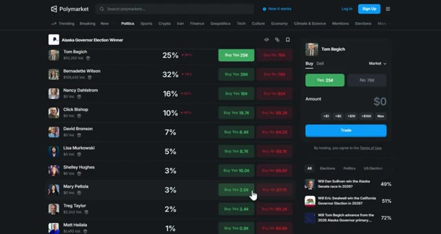
🔍 AgrandirAu début, tout le monde encensait Nikki Haley. Ses chances étaient à 60 cents. Mais si vous faisiez attention au changement de narrative, vous pouviez voir que Trump commençait à en favoriser quelqu'un d'autre. Disons J.D. Vance. J.D. Vance se négociait à 15 cents parce que personne ne parlait encore de lui. Vous achetez J.D. Vance à 15 cents et vous attendez que la narrative change.
Interface & Outils : Polymarket et le réseau social X (Twitter).
Contenu textuel & Code : Graphique de probabilité Polymarket pour J.D. Vance (affichant un volume de $6,452,293 et une tendance montante autour de 21-32%).
Action / Démonstration : Navigation sur la plateforme Polymarket et visualisation de graphiques de prédiction électorale.
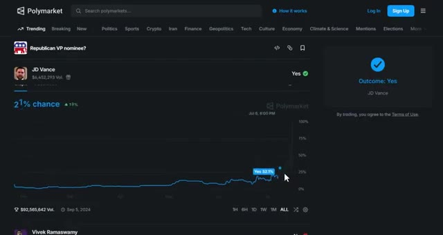
🔍 AgrandirQuelques semaines plus tard, Trump commence à mentionner davantage J.D. Vance. Les médias s'en emparent, et soudainement, J.D. Vance devient le personnage principal. Ses chances bondissent à 50 centimes, et vous avez réalisé un bénéfice de 35 centimes par action. Cela fonctionne parce que la politique est dictée par les cycles médiatiques et l'attention, et non par la logique. La foule a toujours une longueur d'retard sur le changement de narrative.
Interface & Outils : Polymarket et réseau social X (Twitter).
Contenu textuel & Code : Graphique de probabilités de marché prédictif montrant l'envolée des chances de J.D. Vance (jusqu'à 100 %) et volume de transactions associé (92 millions de dollars).
Action / Démonstration : Analyse des mouvements de marché sur Polymarket illustrant l'augmentation de la cote de J.D. Vance suite à l'attention médiatique.
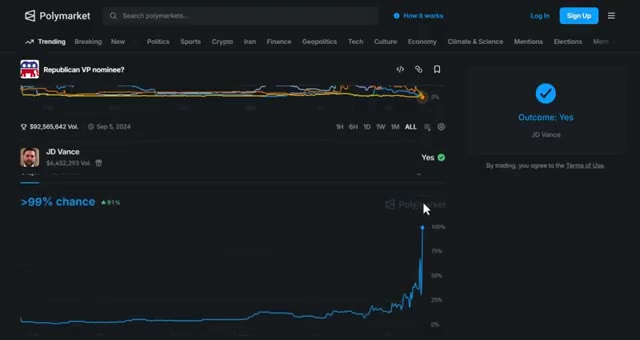
🔍 AgrandirTu anticipes le changement avant qu'il ne se produise et tu te positionnes en avance. Comment repérer le changement ? Suis les initiés politiques sur Twitter. Regarde qui Trump ou d'autres personnalités clés mentionnent davantage. Cherche des changements subtils dans la couverture médiatique. Quand tu vois le changement commencer, achète tôt et surfe sur la vague. La stratégie numéro quatre s'appelle l'alpha du calendrier culturel.
Interface & Outils : Polymarket et interface du réseau social X.
Contenu textuel & Code : Graphique de probabilités de marché de prédiction Polymarket affichant une évolution vers 6% de chance pour J.D. Vance, et interface X montrant des publications politiques. [DESC_IMAGE_3] Visualisation d'un marché de prédiction politique sur Polymarket illustrant la hausse des probabilités pour J.D. Vance en tant que colistier républicain.
Action / Démonstration : Explications face caméra et analyse conceptuelle des marchés.
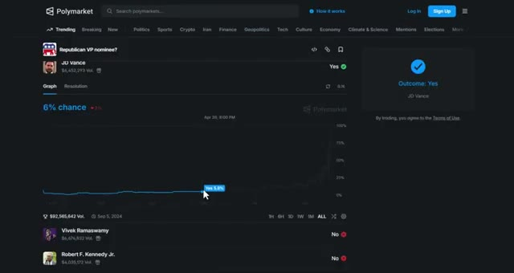
🔍 AgrandirLes gouvernements et les grandes entreprises n'aiment pas s'humilier lors des fêtes nationales importantes. Ils évitent les mauvaises nouvelles, les actions controversées ou les mouvements embarrassants à l'approche de dates culturellement significatives. Vous utilisez cela à votre avantage. Voici comment cela fonctionne. Lorsque le marché s'attend à un mouvement important juste avant une fête axée sur la fierté ou un événement technologiquement significatif, vous allez à l'encontre de cette attente, car culturellement, il est peu probable que cela se produise.
Interface & Outils : Polymarket (site web de marchés de prédiction)
Contenu textuel & Code : Marché "Grok 5 released by...?", affichant les dates du 31 mars 2026 (4%) et du 30 juin 2026 (65%), ainsi qu'un panneau de trading à droite.
Action / Démonstration : Consultation des cotes et des probabilités sur un marché de prédiction lié à la technologie et aux dates de sortie d'intelligence artificielle.
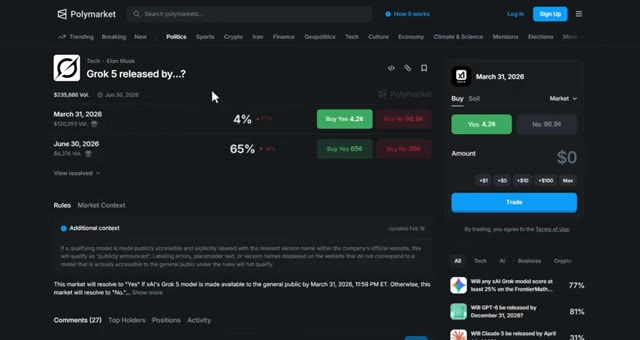
🔍 AgrandirCet avantage existe parce que la plupart des traders ignorent complètement les calendriers culturels. Ce n'est pas de la science politique. C'est de la théorie des jeux. Laissez-moi vous donner un exemple. Il y a un marché qui demande : est-ce qu'OpenAI va lancer GPT-6 d'ici une certaine date ? Maintenant, le mois de mai approche avec la conférence Google I/O et le mois de juin est celui de la conférence WWDC d'Apple.
Interface & Outils : Navigateur Web, Polymarket, Moteur de recherche Google.
Contenu textuel & Code : Marché de prédiction Polymarket sur la sortie de Grok 5 avec cotes en pourcentage (ex: 4% et 65%), et panneau de trading latéral. Résultat de recherche Google indiquant les dates de la conférence Google I/O (19-20 mai 2026).
Action / Démonstration : Navigation sur une plateforme de prédiction et recherche web d'informations sur un calendrier technologique.
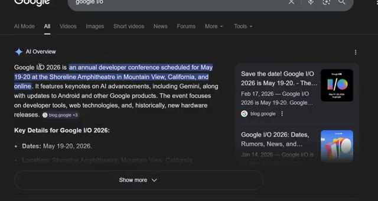
🔍 Agrandiret deux des plus grands événements technologiques de l'année où Apple et Google annoncent leurs stratégies en matière d'IA. Le marché pourrait bien coter le 30 juin, oui, à 20 cents, parce que les traders pensent qu'OpenAI veut rester compétitif et sortir son produit pendant cette période de forte attention. Mais si vous comprenez la stratégie technologique, vous savez qu'OpenAI éviterait probablement de lancer GPT-6 pendant les événements d'Apple ou de Google. Pourquoi ? Parce que leur annonce serait éclipsée par la couverture médiatique massive d'Apple et de Google. OpenAI veut que GPT-6 domine le cycle de l'actualité pendant des jours, et non qu'il se batte pour les grands titres avec iOS.
Interface & Outils : Polymarket (navigateur web) et X (anciennement Twitter).
Contenu textuel & Code : Cotes de prédiction pour la sortie de GPT-6 (ex: 30 juin 2026 à 20 cents) et publications officielles d'OpenAI et Apple. [DESC_IMAGE_3] Visualisation des pages de réseaux sociaux et du marché de prédiction lié au sujet abordé.
Action / Démonstration : Navigation sur la plateforme de prédiction Polymarket pour illustrer les cotes du marché au 30 juin.
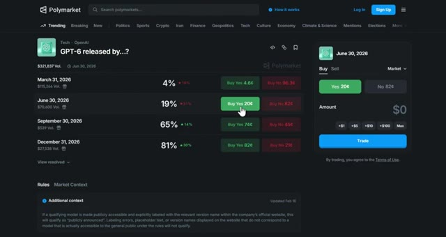
🔍 Agrandirmises à jour et les téléphones Pixel. Soit ils sortent bien avant ces événements pour maîtriser le récit, soit ils attendent après, lorsque le cycle de l'actualité est calme et qu'ils peuvent obtenir un maximum d'attention. Vous achetez le « non » à 82 centimes si la date limite tombe exactement pendant ces grands événements concurrents. Lorsque l'affaire se conclut sans sortie pendant cette fenêtre spécifique, vous avez fait un profit. Cela fonctionne parce que la plupart des traders ne comprennent pas le timing des relations publiques dans la tech et la stratégie concurrentielle. Ils pensent que la concurrence signifie se précipiter pour annoncer, mais les entreprises intelligentes évitent d'être noyées par des événements plus importants. Les entreprises veulent que leurs annonces
Interface & Outils : Polymarket (marché de prédiction décentralisé)
Contenu textuel & Code : Marché "GPT-6 released by...?" avec des probabilités pour les dates du 31 mars 2026 (4%) et du 30 juin 2026 (19%), affichant l'option d'achat du « non » à 82 centimes et un graphique d'évolution temporelle.
Action / Démonstration : Navigation et analyse des cotes et probabilités sur un marché de prédiction Polymarket.
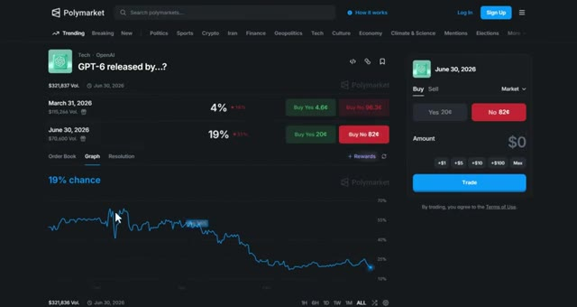
🔍 Agrandirpour être l'histoire principale, et non une note de bas de page lors de l'événement de quelqu'un d'autre. Comment utiliser cette stratégie ? Recherchez les grands événements technologiques comme la WWDC d'Apple, Google I/O, Meta Connect, Microsoft Build et le CES. Vérifiez si l'annonce attendue risque d'être éclipsée par l'événement d'un concurrent. Si c'est le cas, dites-vous que l'entreprise pourrait retarder son annonce pour obtenir une meilleure couverture médiatique.
Interface & Outils : Polymarket (site web de marchés de prédiction)
Contenu textuel & Code : Marché de prédiction Polymarket concernant 'GPT-6 released by...?' avec des probabilités par dates (March 31, 2026 : 4%, June 30, 2026 : 19%, September 30, 2026 : 65%, December 31, 2026 : 81%) et des options d'achat/vente (Buy Yes / Buy No).
Action / Démonstration : Navigation et consultation des cotes de prédiction sur le marché Polymarket pour estimer les dates de sortie de nouvelles technologies.
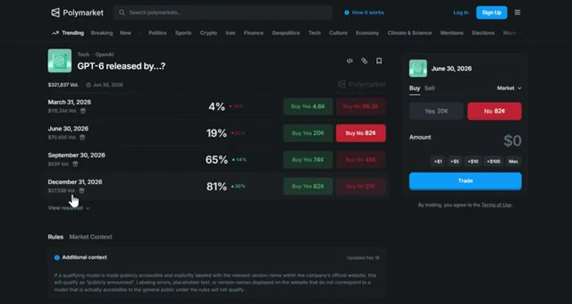
🔍 AgrandirCette stratégie fonctionne particulièrement bien avec les sorties de modèles d'IA, les lancements de produits et les annonces de fonctionnalités majeures où les entreprises recherchent un maximum d'attention et de couverture médiatique. Et rappelez-vous, si vous générez un volume important sur Polymarket, vous pouvez débloquer des primes allant jusqu'à 1 000 dollars après seulement 1 million de dollars de chiffre d'affaires.
Interface & Outils : Plateforme de prédiction en ligne Polymarket (interface web sombre).
Contenu textuel & Code : Marchés de prédiction liés à l'IA, aux lancements de produits technologiques, aux volumes d'échanges et aux dates d'événements futurs. [DESC_IMAGE_2] Navigation et visualisation des différents paris technologiques disponibles sur la plateforme.
Action / Démonstration : Explications face caméra et analyse conceptuelle des marchés.
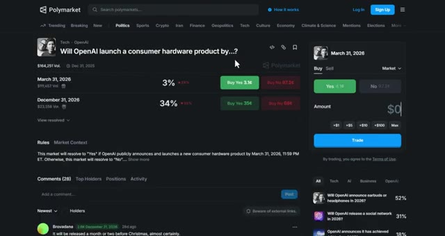
🔍 Agrandir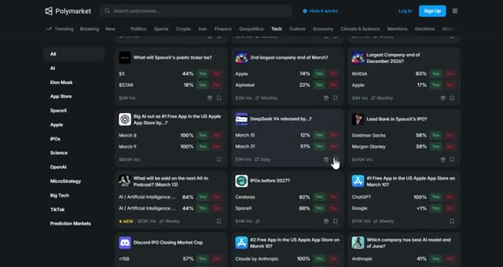
🔍 AgrandirUtilisez mon lien dans la description pour commencer. Si vous avez regardé les trois parties de cette série, vous disposez maintenant d'un arsenal complet de stratégies qui séparent les traders professionnels des parieurs particuliers. Je vais également publier d'autres vidéos sur le trading et les marchés de prédiction concernant des stratégies avancées, alors assurez-vous de vous abonner et de cliquer sur l'icône de la cloche pour ne pas les rater.
Interface & Outils : Polymarket, The Moscow Times
Contenu textuel & Code : Cotes de prédiction, pourcentages de probabilité, volumes d'échange et titres d'actualité géopolitique.
Action / Démonstration : Navigation et présentation de marchés de prédiction et de sources d'information.
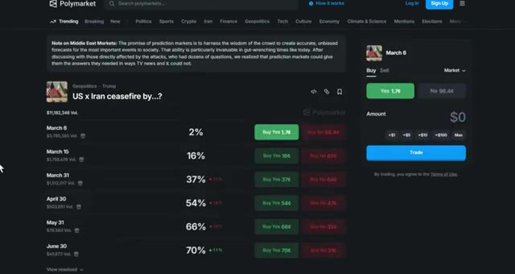
🔍 Agrandir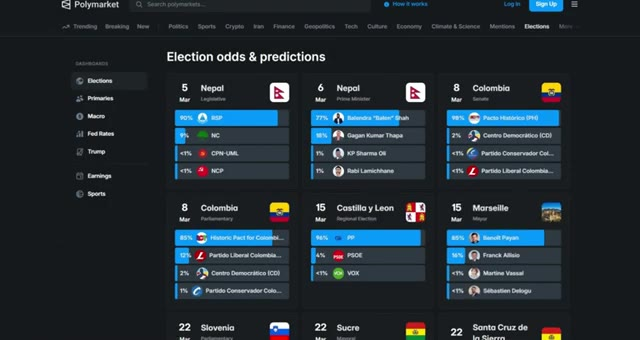
🔍 AgrandirEt si vous voulez automatiser votre copy trading et suivre les baleines, allez voir Tradefox. C'est le seul outil que j'utilise pour le copy trading sur Polymarket. Le lien est dans la description. Si vous avez trouvé cette vidéo utile, laissez un pouce bleu en dessous. Si vous avez des questions, posez-les dans les commentaires et je répondrai à chacune d'entre elles. Et si vous avez raté les parties 1 ou 2 de cette série, regardez les vidéos qui apparaissent à l'écran en ce moment même.
Interface & Outils : Tradefox et Polymarket (plateformes web).
Contenu textuel & Code : Classement de traders avec adresses de portefeuilles, volumes et variations sur 24h sur Tradefox ; grilles de marchés de prédiction avec cotes (Yes/No) et volumes sur Polymarket.
Action / Démonstration : Navigation et présentation des outils de copy trading et de prédiction.
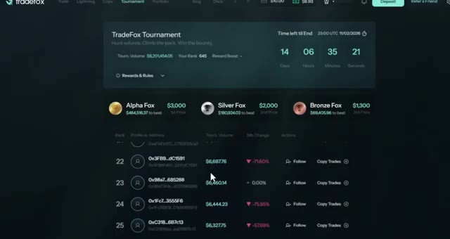
🔍 Agrandir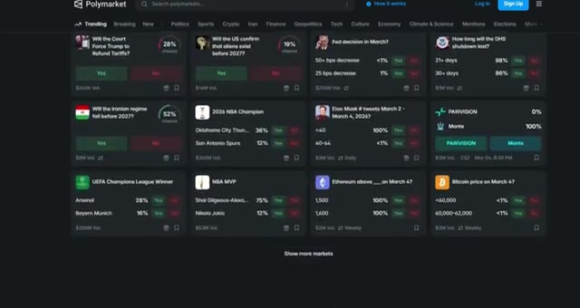
🔍 AgrandirMerci d'avoir regardé et je vous vois dans le prochain.
Interface & Outils : Aucune interface visible.
Contenu textuel & Code : Aucun contenu, code ou graphique affiché.
Action / Démonstration : Fin de la vidéo, transition ou écran noir de clôture.